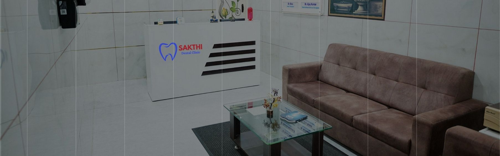
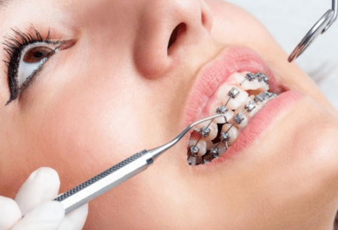
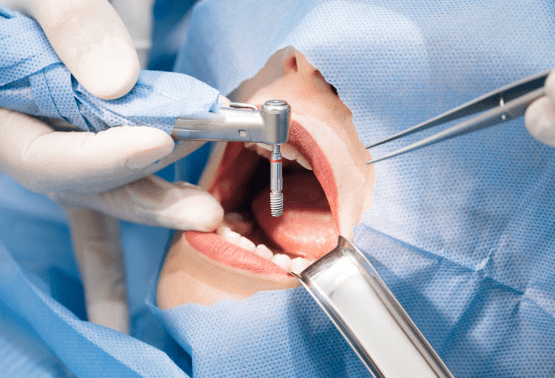
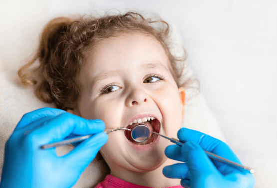
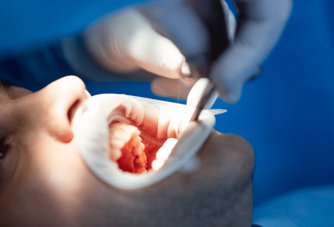
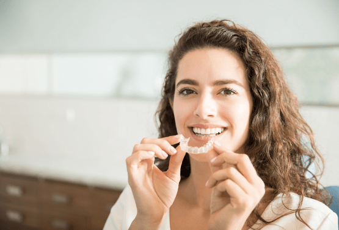

Experience compassionate, expert-led dental services tailored to your needs, all in a modern and welcoming environment.
Fix an AppointmentYou are always in safe hands. We are ready to help, anytime.


Dr. Anupriya has over 20 years of experience in modern dentistry. She graduated in 2000 and worked for six years at Mathura Clinic.
In 2004, she founded Sakthi Dental Clinic in Hosur with a vision of providing high-quality dental care to everyone.
She has also served as a dental consultant at the Primary Health Center at Chandara Hospital for over a decade.
The clinic combines modern dental technology with a warm and patient-friendly environment.
To provide personalized, compassionate and advanced dental services while making every patient feel comfortable and confident.
To become a leading name in modern dentistry through quality patient care, innovation and community awareness.
From general dentistry to specialized treatments, everything under one roof.
Professionally trained doctors committed to personalized patient care.
We prioritize comfort, safety and transparency in every treatment.
Modern tools and equipment ensure precision and safety.

Safe removal of damaged or impacted teeth.

Full mouth replacement for better function.

Restoration of teeth affected by cavities.

Removes plaque and tartar and protects gums.

Professional whitening for a brighter smile.

Braces and treatments to align your teeth.

Stable and natural-looking replacement teeth.

Precise and minimally invasive dental treatment.

Removes infection and preserves natural teeth.

Gentle treatment for problematic wisdom teeth.

Dental bridges for replacing missing teeth.

Custom shells to improve your smile.

Gentle dental care specially for children.

Treatment for advanced gum disease.

Transparent and removable teeth aligners.
Convenient location in Hosur.
Easy parking facility for patients.
Doctors available daily from 9 AM - 9 PM.
Pickup and drop-off support available.
Easy access for wheelchair users.
"The doctors are extremely kind and attentive. My braces treatment is progressing really well. 5/5."
- Manisha M"I got my teeth cleaned and whitened here, and the results were amazing. The staff is so humble and professional."
- Mr. Arun Kumar"Their attention to detail is outstanding. My daughter needed braces and the entire process has been so smooth."
- Mrs. Revathi S.Not entirely. Medicine can give short-term relief, but the actual cause needs professional treatment.
No. Scaling does not damage enamel. Temporary sensitivity may occur.
Scaling removes surface stains but not internal fluorosis stains.
Not always. If the pulp is affected, RCT or extraction may be required.
Yes. A crown is recommended to protect the treated tooth.
Yes. In some cases RCT can preserve a milk tooth.
Brush twice daily, rinse after meals, floss regularly and have routine check-ups.
Braces are commonly effective between 12 and 14 years, depending on the case.
No. Removal is needed when they are impacted, infected or causing problems.
Yes. Replacement helps maintain proper bite and prevents nearby teeth from shifting.
They restore appearance and function and provide a stable replacement for missing teeth.
Use a soft or medium toothbrush with a small head and non-abrasive fluoride toothpaste.
Enamel wear, decay, exposed roots and cracks can cause sensitivity.
A dental visit every six months is recommended.
📍 B2/8, SBM Layout, Anthivadi, Hosur, Tamil Nadu 635109, India
📧 info@sakthidentalclinic.in
📞 +91 9862890897 / +91 9363298118
🕒 Sunday to Saturday: 9 AM - 7 PM
We may collect information such as name, email and phone number when users voluntarily submit forms.
Our website may use cookies to improve user experience and remember preferences.
Information may be used to operate the website, improve customer service, respond to enquiries and communicate about appointments or services.
We use appropriate security measures to protect personal information from unauthorized access.
We do not sell, trade or rent personal identification information to third parties.
We do not knowingly collect personal information from children under 13.
Sakthi Dental Clinic may update this policy from time to time. Users are encouraged to review it periodically.
📍 B2/8, SBM Layout, Anthivadi, Hosur, Tamil Nadu 635109, India
📧 info@sakthidentalclinic.in
📞 +91 9862890897 / +91 9363298118